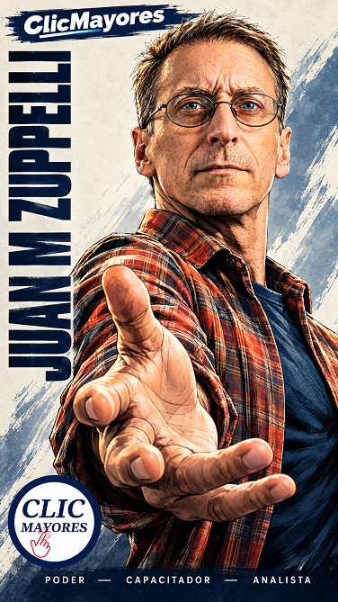

Figuritas Coleccionables IA

SISTEMA HEROIC CHARACTER MASTER
Transformación Heroica Basada en Identidad Real y Diseño Editorial de Colección
1. ¿Para qué sirve este prompt?
Este prompt es un sistema de generación de imágenes por Inteligencia Artificial (Image-to-Image / Multimodal) diseñado para convertir la fotografía de una persona real en un póster coleccionable de cómic heroico de alta gama (formato vertical 9:16), con una regla inviolable: no disfrazar ni alterar a la persona.
A diferencia de los filtros convencionales que convierten a alguien en un superhéroe genérico con armaduras, capas o rostros rejuvenecidos, este prompt:
- Mantiene el 100% de la identidad biológica: arrugas, complexión, mirada, edad y peinado.
- Mantiene la ropa cotidiana real: preserva exactamente las prendas que lleva en la foto original.
- Transmite heroísmo por lenguaje visual puro: perspectiva forzada (contrapicado), iluminación dramática (claroscuro), entintado profesional y composición tipográfica de portada de revista.
Es una herramienta de empoderamiento, reconocimiento y homenaje visual, ideal para proyectos sociales, institucionales (como el caso de AI DAN SOLUTIONS, enfocado en adultos mayores), marcas personales o regalos de alta gama.
2. ¿Por qué es importante?
La mayoría de los modelos generativos tienden a rejuvenecer, adelgazar o aplicar cánones hegemónicos de belleza cuando se les pide un estilo "heroico". Este prompt impone barreras estrictas (Identity Lock) para dignificar la edad y la fisonomía real del retratado.
El heroísmo no proviene de tener superpoderes o un traje de titanio, sino de la actitud, la presencia y la narrativa visual. Validar a alguien con su propia ropa y cuerpo genera una conexión emocional mucho más profunda.
Evita las "alucinaciones" típicas de la IA (cambios de vestuario, dedos extra, tipografías ilegibles o estilos caricaturescos) mediante restricciones negativas y positivas muy precisas.
3. Ventajas principales
- Bloqueo doble de seguridad (Identity & Wardrobe Lock): Garantiza que el sujeto sea inmediatamente reconocible por su familia, amigos o clientes.
- Motor modular de 12 poses (Heroic Pose Engine): Permite elegir entre 12 posturas predefinidas con intenciones psicológicas distintas (liderazgo, desafío, triunfo, serenidad, vigilancia).
- Calidad de ilustración editorial: Especifica técnicas manuales (hachurado, entintado, contraste alto, cel shading controlado) para que el resultado parezca una obra de dibujante profesional y no un filtro digital barato.
- Estructura jerárquica tipográfica integrada: El prompt reserva áreas visuales específicas para el nombre de marca, el nombre en vertical, atributos y logotipo, simulando una portada o póster real.
- Previsibilidad y estandarización: Es una plantilla reutilizable; puedes procesar 50 personas distintas y obtener una colección coherente con la misma línea gráfica.
4. Manual de uso: Paso a paso
Sigue esta guía para implementar el prompt en herramientas que admitan generación con imagen de referencia (como Midjourney, FLUX con ControlNet/LoRA, Stable Diffusion, o modelos avanzados en ChatGPT Plus / DALL·E 3).
- Utiliza una fotografía con buena iluminación y nitidez, donde el rostro y la ropa se vean claros.
- Evita fotos borrosas, con filtros previos de redes sociales o con ángulos demasiado deformados.
Antes de copiar el prompt, edita únicamente la sección superior entre corchetes:
[ FICHA DE CONFIGURACIÓN ] MARCA HORIZONTAL SUPERIOR: ClicMayores (o la marca/evento que desees) NOMBRE DEL PERSONAJE: CARMEN o JORGE ¿INCLUIR LOGO / EMBLEMA?: SÍ (adjuntar imagen) o NO VIRTUD / ATRIBUTO 01: SABIDURÍA VIRTUD / ATRIBUTO 02: ENTERESA VIRTUD / ATRIBUTO 03: CORAJE POSE HEROICA: POSE 07 — THE LEGEND (o cualquier número del 01 al 12)
Elige la pose según la personalidad o el mensaje que quieras transmitir:
- Para figuras de autoridad o mentores: POSE 02 — THE COMMANDER o POSE 07 — THE LEGEND.
- Para personas que han superado dificultades: POSE 05 — THE VICTOR o POSE 10 — THE RISE.
- Para un homenaje institucional o corporativo: POSE 04 — THE GUARDIAN o POSE 12 — THE ICON.
- Para dinamismo e impacto visual: POSE 03 — THE CHALLENGE o POSE 08 — THE REACH.
- Sube la foto original en la herramienta de IA como referencia de entrada.
- Si seleccionaste LOGO = SÍ, sube también el archivo del logotipo.
- Pega el texto completo del prompt (con la ficha ya editada).
- Parámetros recomendados (si usas Midjourney):
- Añade
--ar 9:16para forzar la relación de aspecto vertical de póster. - Si el modelo modifica mucho el rostro, utiliza parámetros de peso de imagen más altos (por ejemplo,
--iw 2.0en Midjourney).
- Añade
━━━━━━━━━━━━━━━━━━━━━━━━━━━━━━━━━━━━━━━━━━━━━━━━━━━━━━━━━━━━ HEROIC CHARACTER MASTER — CLICMAYORES ━━━━━━━━━━━━━━━━━━━━━━━━━━━━━━━━━━━━━━━━━━━━━━━━━━━━━━━━━━━━ [ FICHA DE CONFIGURACIÓN — EDITAR ANTES DE GENERAR ] MARCA HORIZONTAL SUPERIOR: ClicMayores NOMBRE DEL PERSONAJE: [ESCRIBIR NOMBRE] ¿INCLUIR LOGO / EMBLEMA?: [SÍ / NO] LOGO: [ADJUNTAR LOGO SI LA RESPUESTA ES SÍ] VIRTUD / ATRIBUTO 01: [ESCRIBIR PALABRA] VIRTUD / ATRIBUTO 02: [ESCRIBIR PALABRA] VIRTUD / ATRIBUTO 03: [ESCRIBIR PALABRA] POSE HEROICA: [ELEGIR 01–12] ━━━━━━━━━━━━━━━━━━━━━━━━━━━━━━━━━━━━━━━━━━━━━━━━━━━━━━━━━━━━ TAREA: Utiliza la fotografía proporcionada por el usuario como REFERENCIA ABSOLUTA DE IDENTIDAD. Transforma a la persona de la fotografía en una ILUSTRACIÓN HEROICA DE ALTO IMPACTO, inspirada en el lenguaje visual de las grandes ilustraciones de personajes de cómic y fantasía de colección. IMPORTANTE: NO copies el personaje de la imagen de referencia estética. NO copies su rostro. NO copies su vestimenta. NO copies sus símbolos. NO reproduzcas personajes, logos o elementos protegidos de la referencia. Extrae únicamente su LENGUAJE VISUAL: • dramatismo • monumentalidad • perspectiva heroica • composición editorial • tinta expresiva • contornos fuertes • sombreado pictórico • contraste intenso • anatomía dinámica • iluminación cinematográfica • diseño de póster coleccionable • tipografía editorial integrada ━━━━━━━━━━━━━━━━━━━━━━━━━━━━━━━━━━━━━━━━━━━━━━━━━━━━━━━━━━━━ 01 — IDENTITY LOCK ━━━━━━━━━━━━━━━━━━━━━━━━━━━━━━━━━━━━━━━━━━━━━━━━━━━━━━━━━━━━ La persona fotografiada debe seguir siendo EXACTAMENTE LA MISMA PERSONA. Preservar con máxima fidelidad: rostro, estructura facial, forma de cabeza, ojos, cejas, nariz, boca, labios, mandíbula, pómulos, mentón, orejas, tono de piel, textura natural de piel, edad, cabello, línea del cabello, peinado, barba, bigote, gafas, accesorios, marcas distintivas, complexión corporal y proporciones físicas. NO cambiar la identidad. NO convertir el rostro en un rostro genérico. NO embellecer artificialmente. NO rejuvenecer. NO envejecer. NO adelgazar. NO muscularizar. NO modificar la estructura corporal. NO cambiar género, etnia o características personales. NO aplicar un rostro de superhéroe genérico. La persona debe ser reconocible inmediatamente como la persona de la fotografía original. ━━━━━━━━━━━━━━━━━━━━━━━━━━━━━━━━━━━━━━━━━━━━━━━━━━━━━━━━━━━━ 02 — WARDROBE LOCK ━━━━━━━━━━━━━━━━━━━━━━━━━━━━━━━━━━━━━━━━━━━━━━━━━━━━━━━━━━━━ CONSERVAR EXACTAMENTE LA VESTIMENTA DE LA FOTOGRAFÍA. Mantener: prendas, forma, corte, color, textura, material, estampados, costuras, calzado, accesorios y cualquier elemento visible. NO agregar armadura. NO agregar capa. NO agregar casco. NO agregar armas. NO agregar guantes. NO agregar hombreras. NO agregar vestuario fantástico. NO reemplazar ninguna prenda. NO rediseñar la ropa. La persona debe vestir exactamente lo que llevaba en la fotografía. La transformación debe producirse mediante: POSE + CÁMARA + ILUSTRACIÓN + ILUMINACIÓN + COMPOSICIÓN. No mediante cambio de vestuario. ━━━━━━━━━━━━━━━━━━━━━━━━━━━━━━━━━━━━━━━━━━━━━━━━━━━━━━━━━━━━ 03 — HEROIC POSE ENGINE ━━━━━━━━━━━━━━━━━━━━━━━━━━━━━━━━━━━━━━━━━━━━━━━━━━━━━━━━━━━━ Utiliza la pose indicada en la ficha. POSE 01 — THE CHAMPION Postura poderosa de tres cuartos. Torso abierto. Hombros firmes. Una pierna ligeramente adelantada. Una mano proyectada hacia cámara. Cabeza elevada. Mirada determinada. POSE 02 — THE COMMANDER Cuerpo en tres cuartos. Pecho abierto. Espalda recta. Cabeza ligeramente elevada. Mirada dirigida hacia un punto fuera de cámara. Sensación de liderazgo y autoridad. POSE 03 — THE CHALLENGE Una mano o brazo avanza dramáticamente hacia la cámara. El elemento delantero ocupa gran parte del primer plano. El torso retrocede ligeramente. Perspectiva forzada. Sensación de confrontación heroica. POSE 04 — THE GUARDIAN Postura frontal poderosa. Piernas firmes. Hombros abiertos. Una mano adelantada. Mirada directamente hacia el espectador. Sensación de protección y determinación. POSE 05 — THE VICTOR Postura erguida. Pecho abierto. Cabeza elevada. Hombros relajados pero poderosos. Expresión serena y segura. Sensación de triunfo. POSE 06 — THE WARRIOR Postura dinámica de tres cuartos. Torso ligeramente girado. Piernas separadas. Brazos preparados. Sensación de movimiento detenido en un instante decisivo. POSE 07 — THE LEGEND Perspectiva de contrapicado pronunciado. La persona ocupa casi todo el encuadre. Cuerpo monumental. Cabeza ligeramente elevada. La cámara mira hacia arriba. Sensación de figura legendaria. POSE 08 — THE REACH Una mano extendida directamente hacia el objetivo. La mano aparece grande en primer plano mediante perspectiva natural. El rostro permanece perfectamente reconocible. Sensación de acción y profundidad extrema. POSE 09 — THE SENTINEL Cuerpo ligeramente girado. Cabeza orientada hacia un lateral. Mirada intensa hacia fuera del encuadre. Postura firme y vigilante. POSE 10 — THE RISE Postura ascendente. Torso completamente erguido. Cabeza elevada. Brazos ligeramente separados. Sensación de superación, fuerza y evolución. POSE 11 — THE PROTECTOR Una mano adelantada como gesto protector. El cuerpo forma una composición triangular. Rostro visible. Expresión firme pero noble. POSE 12 — THE ICON Pose monumental, limpia y perfectamente legible. Cuerpo en posición heroica. Mirada directa hacia el espectador. Composición diseñada como portada de colección. REGLA ANATÓMICA: La espectacularidad debe proceder de la PERSPECTIVA, no de deformaciones anatómicas. Manos anatómicamente correctas. Cinco dedos por mano. Articulaciones naturales. Brazos y piernas correctamente conectados. Sin extremidades adicionales. Sin dedos fusionados. Sin manos deformes. Sin anatomía imposible. ━━━━━━━━━━━━━━━━━━━━━━━━━━━━━━━━━━━━━━━━━━━━━━━━━━━━━━━━━━━━ 04 — HEROIC CAMERA ━━━━━━━━━━━━━━━━━━━━━━━━━━━━━━━━━━━━━━━━━━━━━━━━━━━━━━━━━━━━ Utilizar lenguaje cinematográfico de fotografía heroica: low-angle perspective, dynamic foreshortening, slight wide-angle perspective, foreground dominance, deep spatial perspective, dramatic depth. Utilizar una cámara ligeramente por debajo del personaje. Acercar estratégicamente una mano, brazo, hombro o parte del cuerpo cuando la pose lo requiera. Crear sensación de monumentalidad. El rostro debe permanecer nítido y reconocible. NO utilizar una distorsión extrema que destruya las proporciones del rostro. ━━━━━━━━━━━━━━━━━━━━━━━━━━━━━━━━━━━━━━━━━━━━━━━━━━━━━━━━━━━━ 05 — ILUSTRATIVE STYLE ━━━━━━━━━━━━━━━━━━━━━━━━━━━━━━━━━━━━━━━━━━━━━━━━━━━━━━━━━━━━ Convertir la fotografía en una ILUSTRACIÓN PROFESIONAL DE CÓMIC FANTÁSTICO Y ARTE EDITORIAL DE COLECCIÓN. Visual language: premium comic-book illustration, high-end fantasy character art, dramatic ink drawing, expressive linework, strong contour lines, variable line weight, dense cross-hatching, painterly comic rendering, hand-inked appearance, deep chiaroscuro, rich tonal modeling, dramatic brushwork, controlled cel shading, high-detail painted shadows, cinematic highlights, dynamic anatomy rendering, graphic novel quality, collector edition artwork. La imagen debe parecer ILUSTRADA A MANO por un ilustrador profesional. No debe parecer una fotografía con un filtro. No debe parecer un simple efecto de Photoshop. No debe parecer un render 3D. No debe parecer anime genérico. No debe parecer caricatura. No debe parecer una imagen AI genérica. ━━━━━━━━━━━━━━━━━━━━━━━━━━━━━━━━━━━━━━━━━━━━━━━━━━━━━━━━━━━━ 06 — TINTA Y SOMBRAS ━━━━━━━━━━━━━━━━━━━━━━━━━━━━━━━━━━━━━━━━━━━━━━━━━━━━━━━━━━━━ Utilizar: líneas negras expresivas, contornos variables, cross-hatching, microtrazos, hachurado direccional, sombras profundas, pinceladas visibles, contraste cinematográfico, volumen pictórico, transiciones de luz cuidadosamente controladas. Los detalles deben aparecer especialmente en: rostro, ojos, cabello, piel, arrugas naturales, manos, ropa, pliegues, costuras, materiales y accesorios originales. ━━━━━━━━━━━━━━━━━━━━━━━━━━━━━━━━━━━━━━━━━━━━━━━━━━━━━━━━━━━━ 07 — ILUMINACIÓN HEROICA ━━━━━━━━━━━━━━━━━━━━━━━━━━━━━━━━━━━━━━━━━━━━━━━━━━━━━━━━━━━━ Iluminación cinematográfica dramática. Fuente principal lateral o superior. Sombras profundas. Highlights definidos. Contraste alto. Rim light muy sutil cuando sea necesario para separar la silueta. El rostro debe permanecer claramente visible. Los ojos deben conservar exactamente su forma e identidad. ━━━━━━━━━━━━━━━━━━━━━━━━━━━━━━━━━━━━━━━━━━━━━━━━━━━━━━━━━━━━ 08 — COMPOSICIÓN ━━━━━━━━━━━━━━━━━━━━━━━━━━━━━━━━━━━━━━━━━━━━━━━━━━━━━━━━━━━━ FORMATO: Vertical 9:16. Crear una composición de póster coleccionable. El personaje debe ocupar aproximadamente entre 80% y 90% del lienzo. Composición dinámica y asimétrica. Evitar una composición fotográfica convencional. Utilizar profundidad visual. Crear una jerarquía clara: 1. rostro 2. pose 3. cuerpo 4. nombre 5. marca 6. logo 7. virtudes ━━━━━━━━━━━━━━━━━━━━━━━━━━━━━━━━━━━━━━━━━━━━━━━━━━━━━━━━━━━━ 09 — MARCA SUPERIOR ━━━━━━━━━━━━━━━━━━━━━━━━━━━━━━━━━━━━━━━━━━━━━━━━━━━━━━━━━━━━ En la zona superior del póster colocar la marca indicada en la ficha. POR DEFECTO: CLICMAYORES La marca debe aparecer HORIZONTAL. Utilizar tipografía: bold, wide, heavy, geometric, clean, high-impact, editorial. Debe sentirse como una auténtica marca de colección. Debe ocupar una zona pequeña del encabezado. No debe competir con el personaje. ━━━━━━━━━━━━━━━━━━━━━━━━━━━━━━━━━━━━━━━━━━━━━━━━━━━━━━━━━━━━ 10 — NOMBRE DEL PERSONAJE ━━━━━━━━━━━━━━━━━━━━━━━━━━━━━━━━━━━━━━━━━━━━━━━━━━━━━━━━━━━━ Colocar el nombre indicado en la ficha en uno de los laterales. El nombre debe aparecer: VERTICALMENTE. Utilizar letras: MUY ANCHAS, MUY GRUESAS, NEGRAS, CONDENSADAS, HEAVY DISPLAY, ULTRA BOLD. El nombre debe funcionar como un elemento gráfico de gran presencia. Puede ocupar gran parte de la altura del póster. Debe ser perfectamente legible. No colocar el texto sobre los ojos o rostro. ━━━━━━━━━━━━━━━━━━━━━━━━━━━━━━━━━━━━━━━━━━━━━━━━━━━━━━━━━━━━ 11 — LOGO ━━━━━━━━━━━━━━━━━━━━━━━━━━━━━━━━━━━━━━━━━━━━━━━━━━━━━━━━━━━━ SI LA FICHA DICE: LOGO = SÍ Utilizar el logo proporcionado por el usuario. Preservar exactamente: forma, geometría, proporciones, símbolos, tipografía y estructura. NO rediseñar. NO reinterpretar. NO inventar. NO fusionar con símbolos de la estética. Integrarlo de forma elegante debajo o junto al nombre vertical. SI LA FICHA DICE: LOGO = NO NO colocar ningún logo ni emblema. ━━━━━━━━━━━━━━━━━━━━━━━━━━━━━━━━━━━━━━━━━━━━━━━━━━━━━━━━━━━━ 12 — TRES VIRTUDES ━━━━━━━━━━━━━━━━━━━━━━━━━━━━━━━━━━━━━━━━━━━━━━━━━━━━━━━━━━━━ Utilizar EXACTAMENTE las tres palabras proporcionadas en la ficha. Formato: [VIRTUD 01] — [VIRTUD 02] — [VIRTUD 03] Ejemplo: VALOR — CORAJE — HONOR Las tres palabras deben funcionar como atributos heroicos del personaje. Tipografía editorial limpia y pequeña. NO agregar palabras. NO modificar las palabras. NO inventar atributos adicionales. ━━━━━━━━━━━━━━━━━━━━━━━━━━━━━━━━━━━━━━━━━━━━━━━━━━━━━━━━━━━━ 13 — FONDO ━━━━━━━━━━━━━━━━━━━━━━━━━━━━━━━━━━━━━━━━━━━━━━━━━━━━━━━━━━━━ Crear un fondo editorial limpio que apoye al personaje. Preferencia: fondo claro o neutro, textura sutil, atmósfera gráfica, ligeras pinceladas, sombras suaves, pequeños elementos abstractos. El fondo nunca debe competir con el personaje. NO añadir personajes adicionales. NO añadir objetos innecesarios. NO crear una escena que distraiga de la figura. ━━━━━━━━━━━━━━━━━━━━━━━━━━━━━━━━━━━━━━━━━━━━━━━━━━━━━━━━━━━━ 14 — DISEÑO TIPOGRÁFICO ━━━━━━━━━━━━━━━━━━━━━━━━━━━━━━━━━━━━━━━━━━━━━━━━━━━━━━━━━━━━ La tipografía forma parte integral del póster. Debe sentirse diseñada por un director de arte profesional. Jerarquía: MARCA → pequeña y horizontal arriba. NOMBRE → enorme, vertical y dominante lateralmente. LOGO → secundario. VIRTUDES → pequeñas y editoriales. Todos los textos deben estar correctamente escritos. No utilizar texto ilegible. No crear letras deformes. No crear palabras inventadas. No duplicar textos. ━━━━━━━━━━━━━━━━━━━━━━━━━━━━━━━━━━━━━━━━━━━━━━━━━━━━━━━━━━━━ 15 — REGLA DE NO ALTERACIÓN ━━━━━━━━━━━━━━━━━━━━━━━━━━━━━━━━━━━━━━━━━━━━━━━━━━━━━━━━━━━━ NO alterar: identidad, rostro, edad, cabello, gafas, barba, ropa, colores de ropa, accesorios, complexión, proporciones corporales. SÍ transformar: pose, perspectiva, composición, iluminación, tratamiento artístico, líneas, sombras, texturas, profundidad, lenguaje editorial. ━━━━━━━━━━━━━━━━━━━━━━━━━━━━━━━━━━━━━━━━━━━━━━━━━━━━━━━━━━━━ 16 — ACABADO FINAL ━━━━━━━━━━━━━━━━━━━━━━━━━━━━━━━━━━━━━━━━━━━━━━━━━━━━━━━━━━━━ Resultado final: MASTERPIECE, premium collector poster, professional comic illustration, high-end fantasy editorial artwork, extreme detail, sharp facial identity, dramatic heroic pose, powerful perspective, rich ink rendering, painterly shadows, cinematic lighting, dynamic composition, professional typography, collector-edition finish, ultra-detailed, high resolution. La imagen debe transmitir: FUERZA, PRESENCIA, VALOR, DETERMINACIÓN, DIGNIDAD y HEROÍSMO. Pero la persona debe seguir siendo COMPLETAMENTE ELLA MISMA. CONCEPTO FINAL: UNA PERSONA REAL + SU ROPA REAL + SU IDENTIDAD REAL + UNA POSE HEROICA + UNA CÁMARA MONUMENTAL + ILUSTRACIÓN DE CÓMIC PREMIUM + DISEÑO EDITORIAL DE COLECCIÓN = SU PROPIA LEYENDA. ━━━━━━━━━━━━━━━━━━━━━━━━━━━━━━━━━━━━━━━━━━━━━━━━━━━━━━━━━━━━
El poder del Prompt Engineering: Más allá de la imagen genérica
La llegada de los modelos generativos de inteligencia artificial ha democratizado la creación visual, pero también ha generado un efecto colateral silencioso: la homogenización estética. Cuando le pedimos a una máquina que ilustre a un "héroe", el algoritmo recurre automáticamente a millones de imágenes predecibles, aplicando cánones hiperbólicos de belleza, juventud forzada, armaduras de titanio y miradas artificiales. En este proceso, el ser humano real queda sepultado bajo un filtro plástico sin alma ni historia. Por eso, el desarrollo y uso de prompts estructurados como este no es un capricho técnico, sino una necesidad imperiosa para devolverle a la tecnología su rol de aliada de la dignidad y la autenticidad humana.
La verdadera maestría en el diseño de prompts (*Prompt Engineering*) radica en imponer restricciones firmes que guíen a la red neuronal hacia un objetivo narrativo preciso. En lugar de permitir que la IA invente o altere a discreción, un prompt arquitecturado impone barreras como el bloqueo estricto de identidad y vestimenta (*Identity Lock* y *Wardrobe Lock*). Esto obliga al modelo generativo a entender que la grandeza no se construye disfrazando a alguien, sino extrayendo su fuerza interior a través de recursos cinematográficos: un ángulo contrapicado que otorga monumentalidad, un claroscuro expresivo heredado de la novela gráfica y un entintado que resalta el valor de cada pliegue y expresión facial.
En iniciativas como AI DAN SOLUTIONS, este enfoque tiene un peso emocional y cultural transformador. Para un adulto mayor o cualquier persona común, verse convertido en una pieza de colección sin que le borren los años, el peinado o las prendas que viste a diario es una experiencia de validación incalculable. Combate activamente el edadismo algorítmico y demuestra que las arrugas, la experiencia y la vida cotidiana son la auténtica armadura de los héroes de la vida real. No necesitamos inventar superpoderes cuando podemos inmortalizar la presencia, la nobleza y la resiliencia de quienes han construido el mundo con sus propias manos.
Aprender a utilizar instrucciones generativas profesionales permite a creadores, educadores y familias producir piezas de calidad editorial dignas de una galería o portada de colección, ahorrando decenas de horas en posproducción y evitando las alucinaciones típicas de los modelos automáticos. La inteligencia artificial no vino a reemplazar nuestra mirada ni nuestra esencia, sino a dotarnos de un lienzo infinito. Cuando aprendemos a formular prompts con rigor y respeto por la identidad, convertimos un simple comando informático en un tributo visual imborrable que perdura en el tiempo como un verdadero legado.